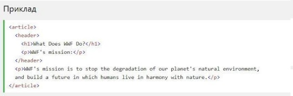
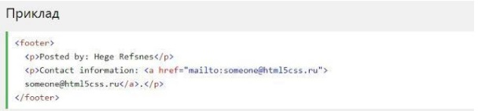

Семантичні елементи HTML5 підтримуються у всіх сучасних браузерах.
Крім того, ви можете "навчити" старих браузерів, як обробляти "невідомі
елементи".
Прочитайте про це в підтримці браузера HTML5 .
Семантичний елемент чітко описує його значення як для браузера, так і
для розробника.
Приклади не семантичних елементів:
‹div› і ‹span›- нічого не говорить
про його вміст.
Приклади семантичних елементів: ‹form›, ‹table› і ‹article›-
чітко
визначає його зміст.
Семантичні елементи HTML5 підтримуються у всіх сучасних браузерах.
Крім того, ви можете "навчити" старих браузерів, як обробляти "невідомі
елементи".
Прочитайте про це в підтримці браузера HTML5 .
HTML5 пропонує нові семантичні елементи для визначення різних частин веб-сторінки:
Елемент ‹section› визначає розділ в документі.
Згідно з документацією в3к′с HTML5: ′розділ представляє собою
тематичну угруповання контенту, зазвичай з заголовком′.
Домашня сторінка зазвичай може бути розділена на розділи для
ознайомлення, змісту і контактної інформації.
Елемент ‹article› визначає незалежний, автономний вміст.
Стаття повинна мати сенс самостійно, і вона повинна мати можливість
читати його незалежно від іншої частини веб-сайту.
Приклади того, де можна використовувати елемент ‹article›

Елемент ‹header› задає заголовок для документа або розділу
Елемент ‹header› повинен використовуватися в якості контейнера для
вступного змісту.
В одному документі може бути кілька елементів ‹header›.
У наступному прикладі визначається заголовок для статті:
Елемент ‹footer› вказує нижній колонтитул для документа або розділу
Нижній колонтитул зазвичай містить автора документа, інформацію про авторське право, посилання на умови використання, контактні дані і т.д.
В одному документі може бути кілька елементів ‹footer›.
